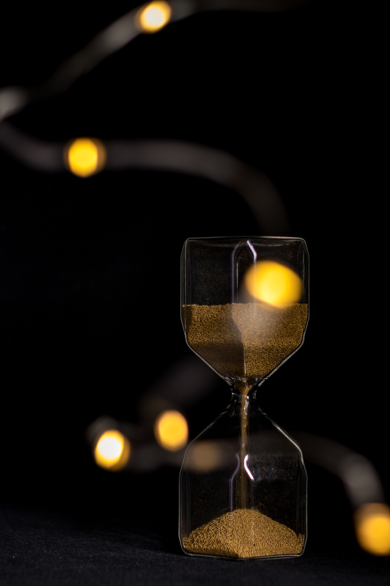
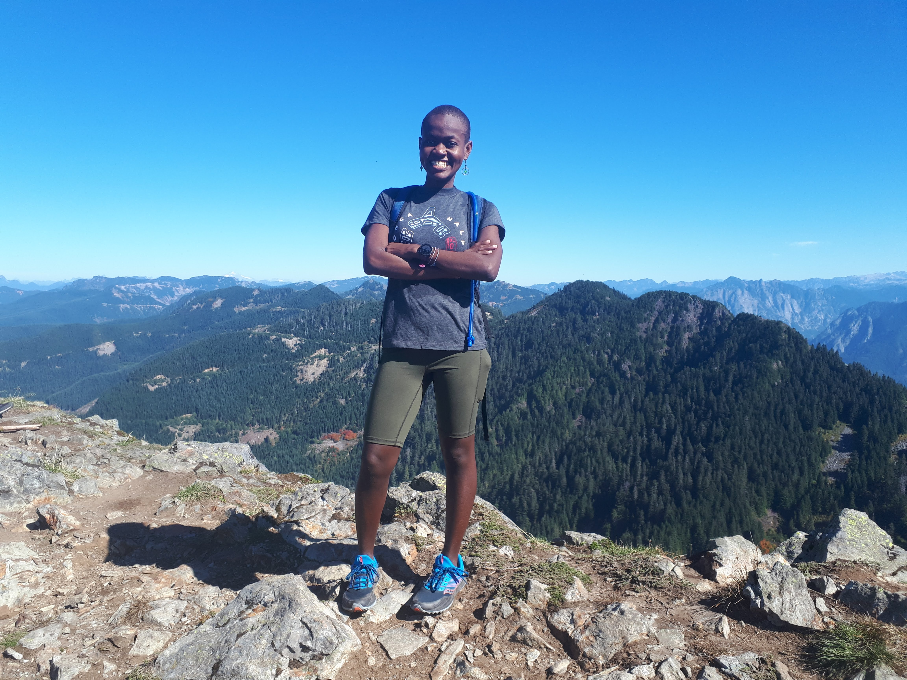

“I could go on forever” is not something I ever imagined I’d say after running 14+ miles with over 4000ft thousands of elevation gain, but here we are. By ultra standards that is a piece of cake but I imagine the feeling is shared by all endurance athletes. Although this post was inspired by a run, it is not another running post; its about endurance. Before we get to that, gather around for a little bit of story time.
It all started with fear. I vowed to do things that scare me this year and trail running did just that. The next logical step was to signup for an ultra trail race and of course train, facing fears every step of the way. It gives me chills everytime I think about the next run in my training plan and this run was no exception. I got just enough courage after stretching and chatting with a hiker at the trailhead. For the first few miles I was feeling good, until I wasn’t. I was tired, my legs were hurting and it felt like it would go on forever. Being on the mountain and with everything at stake, there was no other option but to keep going. I chose to ignore everything else but the next step. I chose to expect the pain, accept it and dare I say embrace it. Slowly but surely, the discomfort began fading. I don’t remember when or why but at some point I got into a flow that I could go on forever. It hit me that that’s exactly what ultra runners experience. They persevere long enough to hit the sweet spot and the rest is history.
This concept is neither new to me nor to the world. I’ve experienced it while running marathons, I’ve read and watched world class endurance athletes. In all observations, the pattern repeats itself; Fun starts after weathering the storm. This pattern applies well beyond endurance sports. The Oxford Dictionary defines endurance as the fact or power of enduring an unpleasant or difficult process or situation without giving way. We encounter these situations when learning new skills, navigating novel scenarios or simply living. With the exception of toxic situations, endurance comes with a great reward at the end but in many cases we don’t stick around long enough. The good news is we only have to persevere through the storm. How exactly do you persevere? Same thing I did on the trail, embrace the discomfort, face it one step at a time.
Moral of the story? Do things that scare you, do them long enough and they switch from scary to fun. Thanks for reading and stay tuned for the next lesson I pick up from the trail.

Cheers!